Fundamentos de la Música
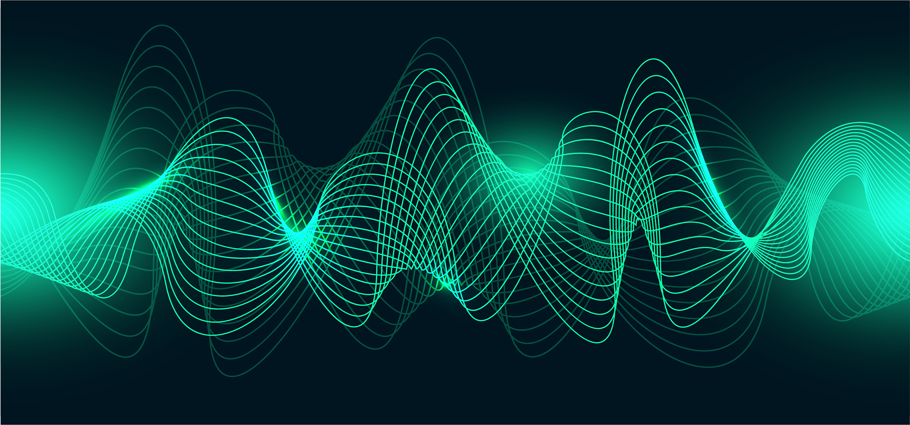
Sonido
El sonido es una vibración que se propaga por el aire y llega al oído, siendo percibida como una sensación auditiva.
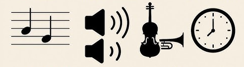
Cualidades del sonido
- Altura: sonidos agudos o graves.
- Intensidad: volumen del sonido.
- Timbre: color del sonido.
- Duración: tiempo del sonido.
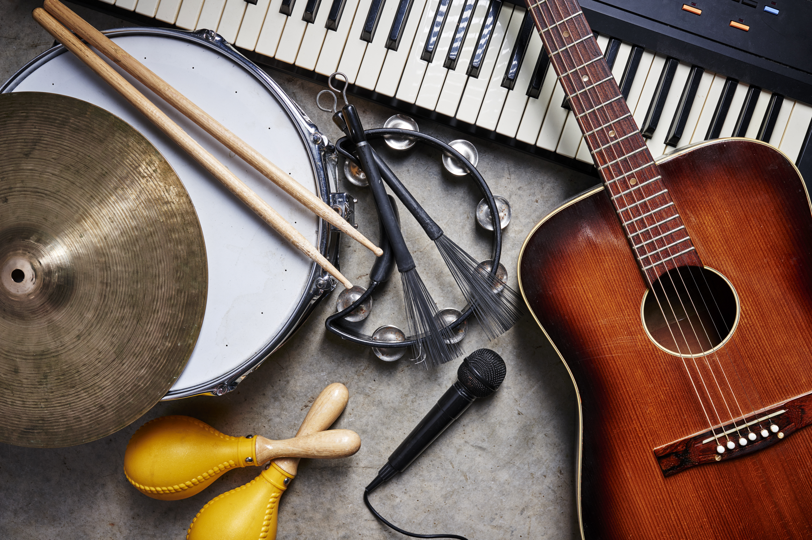
Música
La música es la organización de sonidos con intención artística, combinando ritmo, melodía y armonía.
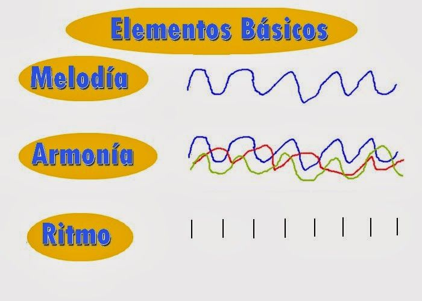
Elementos de la música
- Ritmo: organización del tiempo.
- Melodía: sucesión de notas.
- Armonía: acompañamiento de la melodía.
Instrumentos de Teclado
Instrumentos que producen sonido al presionar teclas.
Tipos
- Piano: acústico o digital.
- Teclado: electrónico y portátil.
- Sintetizador: creación de sonidos.
- Controlador MIDI: control digital.
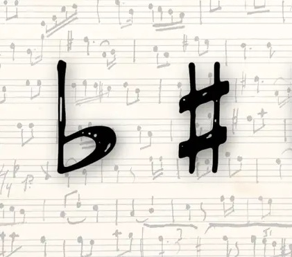
Alteraciones
- Sostenido (♯): sube medio tono.
- Bemol (♭): baja medio tono.
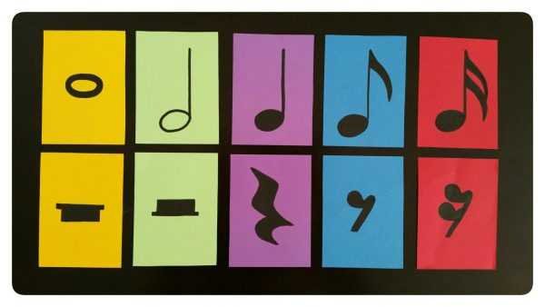
Tiempo Musical
- Pulso: latido constante.
- Tempo: velocidad.
- Compás: organización del tiempo.
Material Auditivo y Visual – Teoría Musical
Explora distintos tipos de acordes, intervalos y ejemplos musicales. Haz clic en las imágenes o botones para escuchar cada ejemplo.
Tipos de Acordes
Acorde Mayor
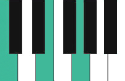
Sonido estable y brillante, común en música alegre.
Acorde Menor
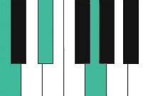
Sonido más oscuro o melancólico.
Acorde Aumentado
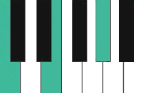
Sonido inestable y tenso, usado para generar expectativa.
Acorde Disminuido
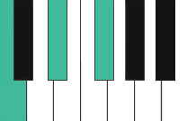
Sonido muy tenso, común en música dramática.
Intervalos Musicales
Tercera Mayor
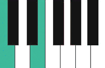
Intervalo consonante y agradable.
Quinta Justa
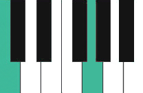
Intervalo muy estable, base de la armonía tonal.
Ejemplos Musicales
Progresión en Acordes Mayores
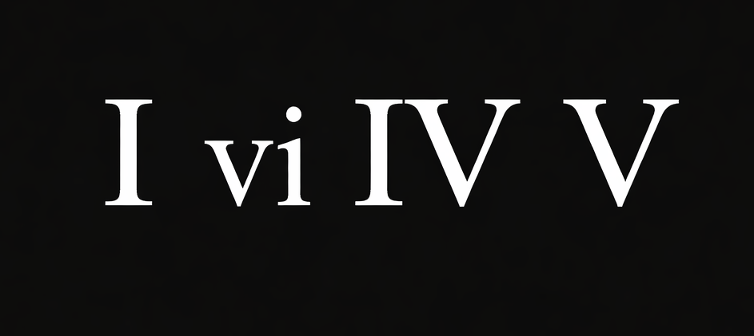
Ejemplo grabado de la progresión de los 50s I vi IV V en tonalidad mayor.
Melodía Simple
Melodía corta de "porque es un buen compañero" para identificar intervalos y ritmo.